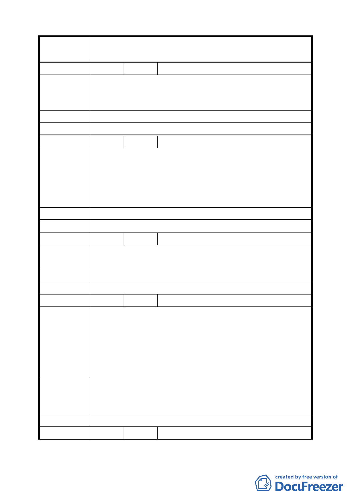

案
名
變更臺北市士林區至善段五小段 80、81、117 地號等加油站
用地為公園用地細部計畫案
編 號 20 陳情人 黃俊智
污染環境，危害生命及建康，增加車禍危險，造成週末更大
陳 情 理 由 塞車，鄰近已有多個加油站，多設立加油站只是增加危險，
也危害故宮國寶。
建 議 辦 法 設立公園可美化市容，綠化環境，提升生活品質。
委 員 會 決 議 同編號 6。
編 號 21 陳情人 黃湘芸
1.本區域鄰近已有多個加油站，因此無須在此增設加油站，
影響交通、污染環境。
陳 情 理 由 2.現在的城市都是希望能夠有更多的綠地，但在至善路這邊
除故宮之外，綠地或全家休閒的地方不多，設立公園將會
為本區提升生活品質，請做為公園用地。
建議辦法
委 員 會 決 議 同編號 6。
編 號 22 陳情人 卲鳳月
陳情理由
降低生活品質，影響交通，污染環境。自強隧道口已有加油
站，危害居民健康生命及安全。
建 議 辦 法 廢止加油站，改設立公園。
委 員 會 決 議 同編號 6。
編 號 23 陳情人 李衍穎
1.該地段之交通動線非常複雜，平常上下班車子行人很多，
假日更是塞爆，另有公車站牌在此，將來如設加油站，恐
陳情理由
更雪上加霜，一定會常常發生交通事故，故應改為公園為
宜。
2.響應馬政府及市長之節能減碳政策，不應為讓開車族方
便，而造成明日污染擴大。
建議將該地段改為環保公園，並請兆亨公司將其擁有的一小
建 議 辦 法 塊地捐出，合併開闢成環保公園，可為：「兆亨環保公園」，
並立碑說明，讓世人瞭解其過程，並感謝兆亨公司之犧牲。
委 員 會 決 議 同編號 2。
編 號 24 陳情人 彭炳進
43